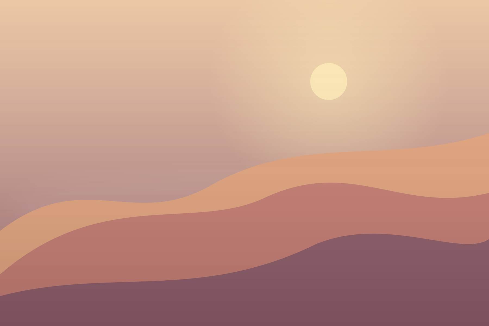

Slideshow
Play, pause, and choose your own interval.
An elegant image gallery with the familiar classic controls, silky transitions, and absolutely no runtime dependencies. Meet razorbox.

Try razorboxClick to preview gallery 01 / 06THE DEMO
Every image is clickable. Use the arrow keys, try the zoom, or explore the bottom thumbnail rail.
VIDEO SUPPORT
HTML5, YouTube and Vimeo video links work alongside photos, with autoplay, privacy-enhanced embeds and stop-on-close.
HTML5 uses a bundled four-second video with sound and works offline. YouTube uses youtube-nocookie.com and Vimeo uses dnt=1 by default. Both still connect to external services and may require consent. The demos need internet access and embeddable videos.
BEYOND MEDIA
Open on-page HTML, trusted iframes, Google Maps or PDF documents in the same lightbox, with native viewer fallbacks.
COPY & PASTE
Choose a content type to see the actual HTML or JavaScript needed to open it in razorbox.
<!-- Same data-razorbox value = same gallery -->
<a href="/images/01.jpg" data-razorbox="trip"
data-caption="Mountain view">
<img src="/images/01-thumb.jpg" alt="Mountain view">
</a>
<a href="/images/02.jpg" data-razorbox="trip"
data-caption="At the coast">
<img src="/images/02-thumb.jpg" alt="At the coast">
</a><!-- Autoplay is requested; browsers may block sound -->
<a href="/videos/intro.mp4"
data-razorbox="videos" data-type="video"
data-poster="/images/poster.jpg"
data-caption="An HTML5 video">
Play video
</a><!-- Privacy Enhanced Mode: youtube-nocookie.com is enforced by default -->
<a href="https://www.youtube.com/watch?v=lPYHfdapsEY"
data-razorbox="videos"
data-caption="YouTube video">
Open YouTube video
</a><!-- Vimeo player URL includes dnt=1 by default -->
<a href="https://vimeo.com/253905163"
data-razorbox="videos"
data-caption="Vimeo video">
Open Vimeo video
</a><!-- Open a real DOM element and restore on close -->
<a href="#contact-form" data-razorbox="content"
data-type="html">Open contact form</a>
<div id="contact-form" hidden>
<h2>Get in touch</h2>
<input type="email" placeholder="Your email">
<button type="button">Send</button>
</div><!-- The destination must permit iframe embedding -->
<a href="/contact.html" data-razorbox="content"
data-type="iframe"
data-caption="Contact page">
Open contact page
</a><!-- Standard Google Maps links are auto-recognized. -->
<a href="https://www.google.com/maps/search/?api=1&query=Empire+State+Building&query_place_id=ChIJaXQRs6lZwokRY6EFpJnhNNE"
data-razorbox="places" data-type="map"
data-caption="Empire State Building">
Open Google Maps
</a>
<!-- For a stable production embed, supply mapApiKey in JS
or data-embed-src with a URL from Maps > Share > Embed a map. --><!-- A PDF URL ending with .pdf is recognized automatically. -->
<a href="/documents/brochure.pdf"
data-razorbox="documents" data-caption="Our brochure">
View PDF
</a>
<!-- Also supports data-type="pdf" for URLs without .pdf suffix. -->import razorbox from '@rafu1987/razorbox'
import '@rafu1987/razorbox/css'
razorbox.bind('[data-razorbox]', {
transition: 'fade', // or 'slide'
thumbnails: true,
thumbsOpen: false,
videoAutoplay: true,
videoMuted: false,
videoPrivacy: true,
wheelZoom: true, // Mouse wheel and Mac trackpad pinch
maxZoom: 8, // Gesture zoom; toolbar uses 2x
theme: 'dark',
locale: 'auto' // Uses page language first
})Use the same data-razorbox value to group different media together. External video autoplay with sound depends on browser policies.
MADE FOR THE DETAILS
Play, pause, and choose your own interval.
Classic bottom thumbnail strip with a quick toggle.
Click to zoom, pinch with a trackpad or scroll the wheel. Drag to pan; the zoom button resets to fit.
A distraction-free view using the native API.
Group links using a single data attribute.
One ES module and a separate stylesheet, for any modern bundler.
GET STARTED
razorbox publishes its JavaScript and stylesheet separately. No runtime-inserted styles, no jQuery.
import razorbox from 'razorbox'
import 'razorbox/css'
razorbox.bind('[data-razorbox]', {
thumbnails: true,
transition: 'fade',
slideshow: true,
wheelZoom: true,
maxZoom: 8,
videoAutoplay: true,
videoMuted: false,
theme: 'dark',
locale: 'auto'
})